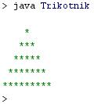
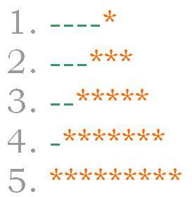
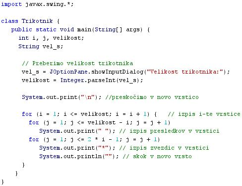

TOLMAÈ IN TOLMAÈENJE
- Tolmaè je raèunalniški program.
- Tolmaè izvaja oziroma izvršuje ukaze, ki so zapisani v raèunalniškem programu.
- Tolmaè mora v osnovi prevesti zvorno kodo vsakokrat, ko želimo pognati program.
- Tolmaè tudi ne ustvari nove, neodvisne in povsem samostojno izvršljive datoteke.
- Jasno razloèevanje med tolmaèi in prevajalniki ni mogoèe, ker vkljuèuje tolmaèenje izvorne kode nujno tudi pretvarjanje izvorne kode v strojno kodo ozioma v tako kodo, ki jo raèunalnik lahko razume in izvede.
- Tolmaèi so programi, ki lahko delujejo na tri naèine:
- neposredno izvršijo izvorno kodo
- prevedejo izvorno kodo v kakšno izvršljivo vmesno kodo in takoj izvršijo program
- takoj izvedejo shranjeno predhodno prevedeno kodo, ki jo je prevedel prevajalnik; ta prevajalnik pa je le del tolmaèa
- Programski jezik Java deluje na tretji naèin.
- Slabost tolmaèenja je ta, da je nekoliko poèasnejše od prevajanja.
- Tolmaèenje poteka ob vsakem zaganjanju programa, prevajanje pa le enkrat.
- Rezultat prevajanja je samostojna izvršljiva datoteka, pri tolmaèenju pa tega ni.
- Tudi èas dostopa do spremenljivk, ki jih vsebuje program, je pri tolmaèenju daljši.
- Primer:
- Besedni opis problema in rešitve.
- "Nariši trikotnik, ki ga kaže slika": Vprašamo se, kaj vse bomo morali postoriti za rešitev problema in to opišemo v nekaj stavkih. Potek reševanja problema poskusimo premisliti èim bolj natanèno.
- Analizirajmo problem. Kaj bo program moral toèno storiti?
|  |
- V prvi vrstici zapiše 4 presledke in 1 zvezdico.
- V drugi vrstici zapiše 3 presledke in 3 zvezdico.
- V tretji vrstici zapiše 2 presledka in 5 zvezdic.
- V èetrti vrstici zapiše 1 presledek in 7 zvezdic.
- V peti vrstici zapiše 0 presledkov in 9 zvezdic.
- Poiskati moramo splošni pravili, ki povezujeta številko vrstice s številom presledkov in zvezdic v njej.
- V vsaki vrstici najprej izpišemo število presledkov, ki je enako velikosti trikotnika v številu vrstic, od katere odštejemo številko vrstice. Število presledkov je enako velikosti trikotnika - številka vrstice, ki jo izpisujemo.
- Izpis vsake vrstice nadaljujemo z zvezdicami. Število zvezdic v vrstici je enako dvakratniku številke trenutne vrstice, ki mu odštejemo število 1.
- Splošni pravili bomo lahko uporabili pri doloèanju parametrov zank v našem programu.
|
-
- Ker gre za veè ponavljanj, bomo izbrali veè zank.
- Prva zanka bo skrbela za pisanje posamezne vrstice in za preskok v novo vrstico.
- Druga zanka bo pisala najprej presledke v posamezno vrstico.
- Tretja zanka bo pisala zvezdice v poamezno vrstico.
VAJA 43:
- V okolju za pisanje izvorne kode v jeziku Java, za prevajanje in za interaktivno delo zapiši zgornji program "Trikotnik". Pomagaj si s sliko.
- Kodo lahko tudi kopiraš iz te datoteke in jo prilepiš v okolje, v katerem pišeš programèke. Pozor: koda, ki jo boš kopiral/a, vsebuje eno, dve, tri ali štiri napake. Èe želiš, da bo program deloval, moraš napake odkriti in jih odpraviti.
- Izvorno kodo shrani pod imenom "ImePriimek43.java". ImePriimek je seveda tvoje lastno ime in priimek.
- Datoteko "ImePriimek43.java" prevedi.
- Prevedeno datoteko zaženi, preveri rezultat v interaktivnem oknu in poklièi profesorja, da vidi rezultat.
1. Vprašanja:
1. Kaj je tolmaè?
2. Kakšna je naloga tolmaèa?
3. Zakaj jasno razloèevanje med tolmaèi in prevajalniki ni mogoèe?
4. Kakšna je slabost tolmaèenja v primerjavi s prevajanjem?
5. Katera sta dva razloga za poèasnost tolmaèenja?
6. Opiši bistvene razlike med tolmaèenjem in prevajanjem programov.
7. Koliko zank in katere zanke vsebuje program v primeru te uène enote?
8. Katero knjižnico smo uvozili v program v primeru te uène enote?
9. Katero metodo iz uvožene knjižnice v primeru te uène enote smo uporabili?
10. Naštej imena in tipe spremenljivk, ki smo jih deklarirali v primeru te uène enote.
2. Zapiši od ene do pet kljuènih besed, ki povzemajo vsebino te uène enote.
3. Povezave do dodatnih informacij.
Tolmaèi v angleški razlièici Wikipedie.
Spletni priroènik proizvajalca programskega okolja Java. To je podjetje Sun.
|